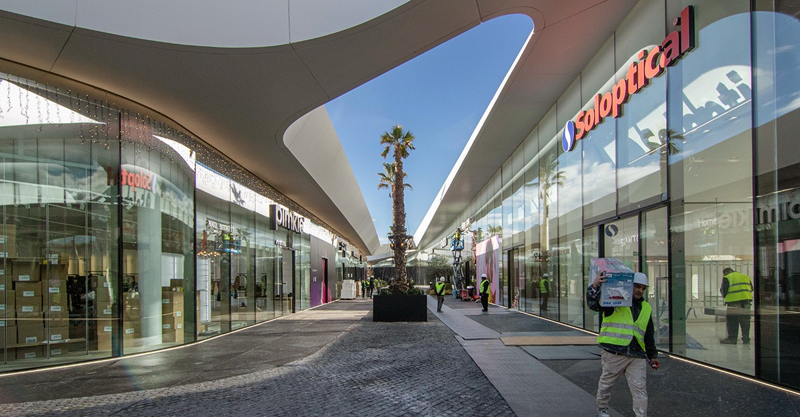
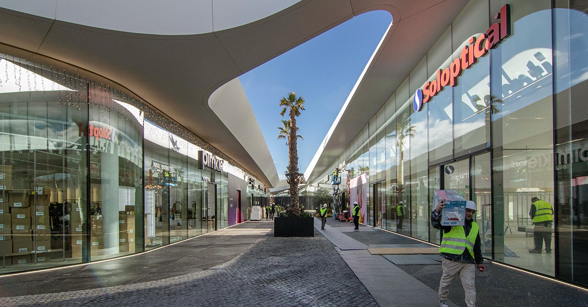

Bienvenidos a Oasiz Madrid
Donde todo es posible
Muy pronto descubrirás un lugar en el que todo puede pasar. Donde el aire, el agua y la vegetación se combinan con la arquitectura más avanzada para crear un punto de encuentro abierto a todo tipo de personas y de experiencias.
Un espacio único en Madrid
Más de 250.000 m2 de espacio al aire libre, 4.000 plazas de parking, 117 locales, ocio para todos los públicos, zonas verdes, un mercado gastronómico, un gran lago central y hasta una playa te esperan en Torrejón de Ardoz, a 10 minutos de Madrid.
Un lugar donde disfrutar de la cultura en directo
Un escenario al aire libre para actuaciones y conciertos, una amplia programación cultural con exposiciones, ópera, zarzuela y mucho más.
Tiendas, Restauración y Ocio listo para para tí
En Oasiz Madrid encontrarás un mundo de moda, tecnología y artículos para el hogar, con una variedad que satisface todas las necesidades y gustos. Nuestra área de restauración te ofrece desde comida rápida hasta bufés, cubriendo una amplia gama para disfrutar de una comida relajada. El ocio aquí es diverso, garantizando entretenimiento para todos. ¡Descubre todo lo que Oasiz te ofrece y vive momentos únicos en cada visita!
Presentación
Noticias
Primera noticia
Segunda noticia
Tercera noticia
Galería de Imágenes

 
